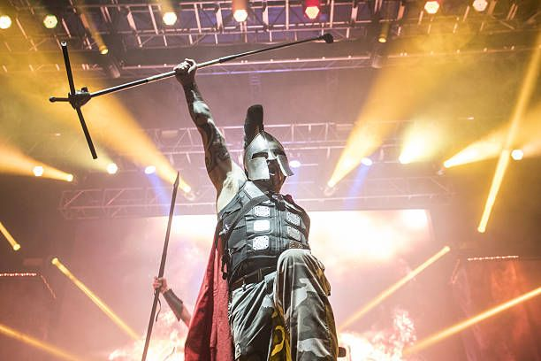
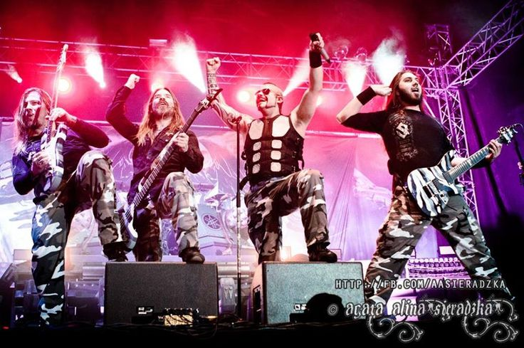
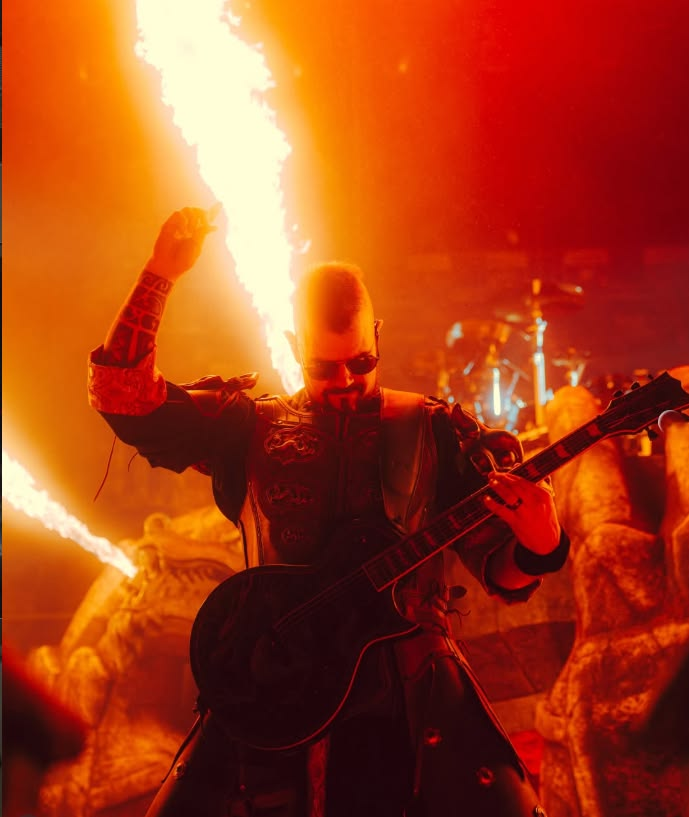
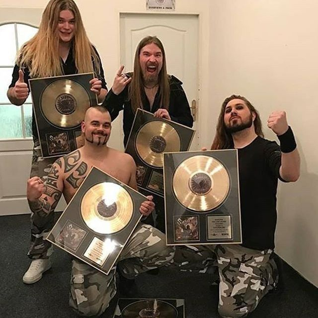
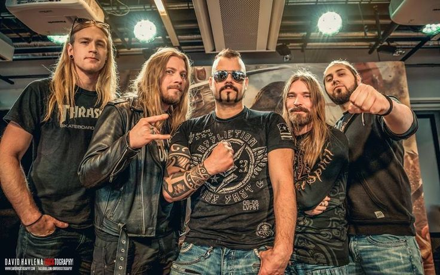
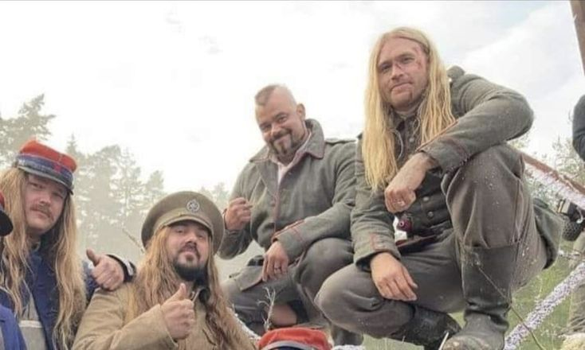
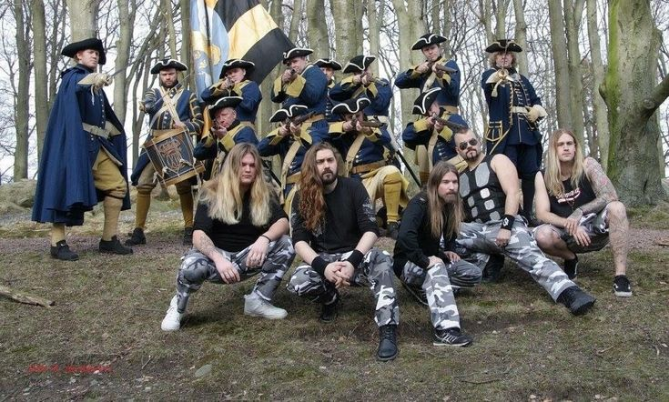

Спарта на сцене
Живое выступление
Йоаким Броден исполняет хит 'Sparta' в аутентичном спартанском шлеме. Безумная энергетика и полное погружение в эпоху античных сражений.

Живое выступление
Йоаким Броден исполняет хит 'Sparta' в аутентичном спартанском шлеме. Безумная энергетика и полное погружение в эпоху античных сражений.

Концертный сет
Мощный кадр команды Sabaton на пике выступления. Музыканты качают многотысячный стадион в лучах прожекторов.

Live Шоу
Уникальный момент концерта: фронтмен Йоаким Броден берёт в руки гитару, чтобы лично выдать мощный тяжелый рифф вместе с остальными гитаристами.

За кулисами
Группа с золотыми дисками за рекорды нового альбома. Исторический триумф Sabaton, запечатленный в неформальной обстановке бэкстейджа.
Вне туров
Суровые металлисты тоже умеют отдыхать! Кадр группы в гавайских рубашках и шортах на морском побережье.

За кулисами
Душевный кадр из бэкстейджа, где все участники группы собрались вместе чтобы сделать фото. Классная фотография без лишнего пафоса.
Промо / Съёмки
Эксклюзивный промо-кадр со съёмочной площадки свежего масштабного клипа. Группа примерила на себя тяжелые кольчуги и образы рыцарей-тамплиеров.

Промо / Съёмки
Атмосферный кадр со съёмочной площадки одного из самых эмоциональных клипов группы — 'The Christmas Truce', воссоздающего исторические события 1914 года.

Промо / Съёмки
Масштабная сцена со съёмок видео 'The Royal Guard'. Музыканты позируют в окружении актеров массовки, облаченных в историческую военную форму шведских гвардейцев.